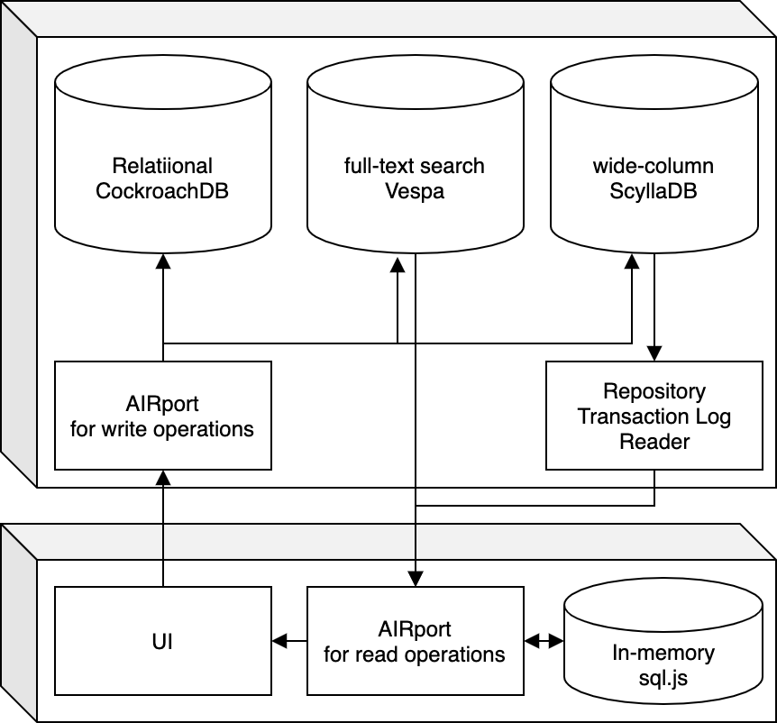

Highway - Repository Turn
Recently I've have arrived at a breakthough in thinking about how Highway can be implemented in a strait forward and simple way, provided that some assumptions are kept about underlying data usage.
Repository usage patterns
The break-though came as a result of thinking about Repositories and how repositories are intended to be used and shared.
Repositories are meant to be autonomous units of knowledge that are used across multiple applications and tie in all of the functionality realted to that knowledge unit. What I was missing before is that for the bulk of use cases any given UI will present data for one repository at a time. In the cases where UIs need to present data across repositories it is possible to create new, aggregate repositories for that usecase and still present the bulk of the data for one central repository.
Proposed implementation
With these usage patterns in mind it is possible constrain all UI operations to a single repository (or a set of related repositories). Then presenting a screen (or a set of related screens) can become a matter of loading the repository transaction logs (or in some cases, like a chat thread, just the recent entries in the transaction log).
The next piece of the puzzle is the fact that AIRport in its entirety (from framework to client applications) is runnable in the browser. Upon SPA intialization for of the application it along with sql.js can be loaded into memory and subsequently retrieve repository transaction logs from the server, turn them into traditional relational data and serve complex queries needed by the UI. The overall system diagram in that case can look like this:
All of Highway write operations will be sent to an AIRport installation on the server-side, where all of operations can be propertly validated. Server-side AIRport will contain an additional module that will write serlialized transaction logs to wide column storage, where they can be quickly retrieved by the repository Id (and optionally a time-frame constraint). In addition to that server-side AIRport can maintain a full text search database, which will contain full text mappings to a combination of Repository ID + timestamp of Transaction Log entry that contains the match.
Further details on this setup are yet to be flushed out but I'm very excited about this approach. In my mind it represents best of both worlds of centrialized data processing and utilization of modern client side hardware. It should serve the bulk of use-cases I can think off while providing a fallback schenario where querying the server-side relational database is possible.
Observables as a bonus
A nice bonus to this approach is that it comes with a very strait forward implemntation of observable behavior. The client can simply subscribe to all new transaction log entries for a given repository and then process the data to see if any of the fields in the obserable query are affected by latest entries. If they are an updated result will be sent to the UI. Again everything in this approach keys off the fact that queries will be limited by a Repository ID.